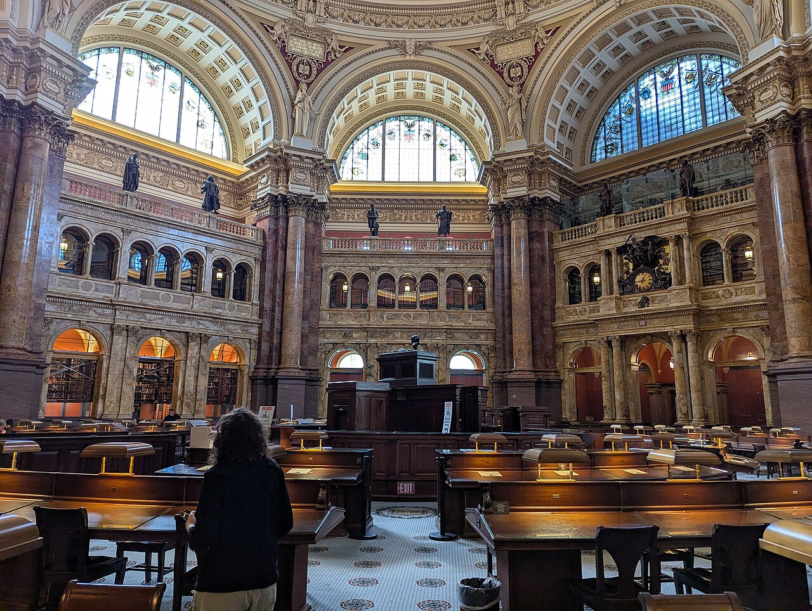
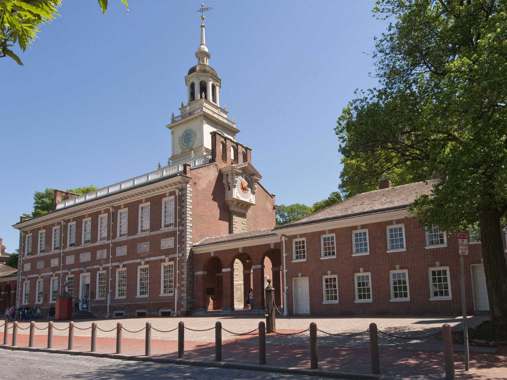

THE CONTROL ROOM已訂的放心，
已訂的放心，
未訂的醒目。
New England 與 Philadelphia 段已接起來；現在真正需要注意的是 DC。勾選狀態與私人筆記只留在這台瀏覽器。


ACTION BOARD這次只追真正
這次只追真正
還沒完成的事。
舊背景資料裡的 IAD、Boston late check-in、9/26–28 缺口都已更新成完成，不會再製造假警報。
接著決定
CONFIRMED ANCHORS
已確認訂位與事件
只顯示當天需要的資訊；票號、PNR、付款資料與私人住宿地址不放進公開網站。
CITY TO CITY
城市間交通
精確班次只用在已開票項目；未訂項目只鎖方向與合理節奏。
出發前打包
私人筆記
內容只存在目前瀏覽器的 localStorage，不會進 GitHub。
自動儲存